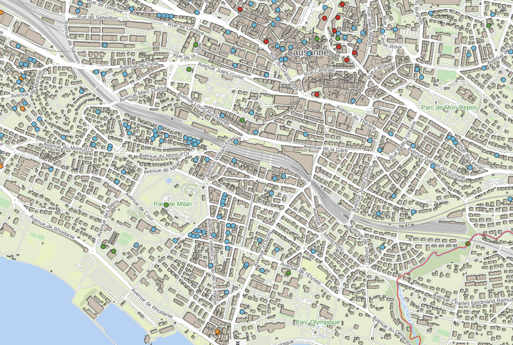

Sie nisten an unseren Gebäuden
Mehlschwalben nisten unter Dachvorsprüngen; Rauchschwalben nutzen Scheunen, Ställe, Hangars und Garagen.
Mehlschwalben und Rauchschwalben sind prioritäre Arten in der Schweiz und im Kanton Waadt. Sie brauchen Gebäude, Lehm, fliegende Insekten und menschliche Toleranz.
Mehlschwalben nisten unter Dachvorsprüngen; Rauchschwalben nutzen Scheunen, Ställe, Hangars und Garagen.
Glatte Fassaden, geschlossene Öffnungen, versiegelte Böden, weniger Insekten und Sanierungen erschweren das Nisten.
Kolonien schützen, Lehm anbieten, Insekten fördern und Kotkonflikte lösen statt Nester zu blockieren.
Die vollständigen Lerninhalte stehen jetzt direkt auf der Startseite, damit Besucher Nester, Lehm, Insekten und städtische Belastungen verstehen, bevor sie handeln.

Schwalben bauen Nester mit Lehm. In versiegelten Städten kann eine kleine feuchte Tonstelle viel bewirken.

Schwalben kehren oft zu früheren Nestplätzen zurück. Bestehende Standorte zu schützen ist deshalb besonders wirksam.
Ein Rauchschwalbenpaar kann rund 150 000 Fliegen, etwa 1 kg Nahrung, brauchen, um eine Brut aufzuziehen.

Mehlschwalben nisten unter Dachvorsprüngen; Rauchschwalben bevorzugen Scheunen, Ställe, Hangars, Garagen und halboffene Räume.
Sie bauen Lehmnester unter Dachvorsprüngen oder an rauen Fassaden. Damit ein Nest hält, darf die Oberfläche nicht zu glatt sein und der Ort sollte geschützt liegen.
Sie nisten meist in Gebäuden oder halboffenen Räumen: Scheunen, Ställen, Hangars, Garagen, Korridoren oder gedeckten Durchgängen.
Für neue Rauchschwalben-Standorte hilft eine grosse Öffnung. Sobald ein Nest besetzt ist, kann ein Eingang von etwa 10 cm ausreichen.
Weil Schwalben oft an frühere Nistplätze zurückkehren, kann der Verlust eines Standorts über eine einzelne Saison hinaus wirken.
Wenn Schwalben Erde, Stroh und Wasser nahe beim Nistplatz finden, können sie natürliche Nester selbst bauen. Eine geeignete Stelle liegt idealerweise innerhalb von 200 m, ist offen, flach, störungsarm und tonreich statt sandig.
Während der Nestbauzeit, ungefähr von Mitte April bis Mitte Juni, muss der Boden feucht bleiben. Vegetation sollte ohne Pestizide entfernt werden, damit die Fläche zugänglich bleibt.
Kleine Änderungen an Gebäuden und Grünflächen können Nester schützen, Konflikte reduzieren und Stadtnatur fördern.
Nicht entfernen oder blockieren. Zugang zum Nest erhalten und Arbeiten ausserhalb der Brutzeit planen.
Schwalben sind standorttreu und kehren oft an dieselben Kolonien zurück. Nester vor Sanierung, Verkauf, Abbruch oder Fassadenarbeiten prüfen und den Zugang vor der Rückkehr wiederherstellen.
Ein Kotbrett unter den Nestern reduziert Verschmutzung, während die Nester erhalten bleiben.
Kotbretter müssen regelmässig gereinigt werden. Ohne Pflege können Hygieneprobleme entstehen und Fressfeinde leichter Zugang zu Nestern bekommen.
Kunstnester können Kolonien unterstützen, wenn natürliche Nistplätze fehlen, besonders in der Nähe bestehender Standorte.
Sie sind keine Universallösung: Standort, Fassadenoberfläche, Dachvorsprung, Störung und Unterhalt bestimmen, ob sie angenommen werden.

Koloniedaten aktuell halten, Prioritätszonen festlegen und späte Konflikte durch Bewilligungen und Information vermeiden.
Gemeinden können Bewilligungen, öffentliche Gebäude, Inventare und Kommunikation verbinden, um Niststandorte lokal zu erhalten, zu stärken oder neu zu schaffen.
Wiesen, Hecken, Teiche, Obstgärten, durchlässige Böden und feuchte Tonstellen unterstützen die Brut.
Lehmstellen wirken am besten, wenn sie offen, flach, tonreich, innerhalb von etwa 200 m der Nester liegen und von Mitte April bis Mitte Juni feucht bleiben.

Verletzte Altvögel brauchen Pflege. Ein unverletzter Jungvogel hat oft im eigenen Nest die besten Chancen.
Eine geeignete Stelle liegt idealerweise innerhalb von 200 m der Nester, ist offen, flach, störungsarm und tonreich. Während der Nestbauzeit muss sie feucht bleiben.
Sie sind besonders nützlich, wenn sie etwa 60 cm unter den Nestern angebracht und breit genug sind. Sie helfen nur, wenn sie erreichbar sind und regelmässig gereinigt werden.
Sie sind vielversprechender in der Nähe bestehender Kolonien oder in Prioritätsgebieten. Schwalbentürme können teuer sein und funktionieren nicht garantiert.
Rauchschwalben kommen oft im März und bleiben bis etwa Oktober. Mehlschwalben kommen eher im April und ziehen Ende September weg. Arbeiten sind idealerweise von Ende September bis Anfang April geplant.
Schwalben und ihre Nester sind geschützt. Prüfen Sie vor Sanierung, Abbruch oder Fassadenarbeiten auf Nester. Bei aktiven Nestern ausserhalb der Brutzeit planen und den Zugang vor der Rückkehr der Vögel wiederherstellen.
Empfohlenes Zeitfenster: Ende September bis Anfang April